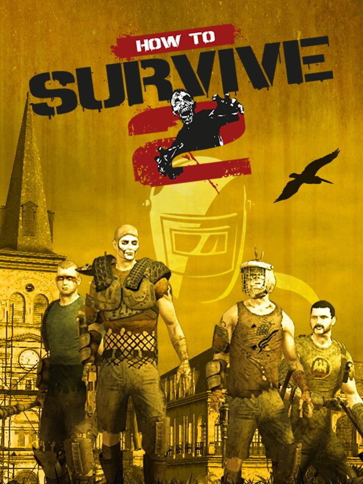

How to Survive 2
How to Survive 2
Details
|  | |
| Playtime | Not Played |
| Last Activity | Never |
| Added | 4/12/2022 22:47:41 |
| Modified | 4/20/2022 18:41:14 |
| Completion Status | $Check Out |
| Library | Steam |
| Source | Steam |
| Platform | PC (Windows) |
| Release Date | 9/8/2016 |
| Community Score | 57 |
| Critic Score | 78 |
| User Score | |
| Genre | RPG Survival |
| Developer | EKO Software |
| Publisher | 505 Games |
| Feature | Co-Operative Multiplayer Single Player |
| Links | Official Website Steam |
| Tag | [EMT] Logo Missing |
Description
Several years have passed since the original How to Survive events on Los Riscos’ archipelago. Now the local infection has turned into a worldwide pandemic. Everyone around the world, groups of people or lone wolves, try to survive one more day among the infected, attempting to recover a semblance of normal life. You find yourself in Louisiana and your survival chance starts by building a safe camp and becoming a skilled survivalist.
Find water, food and shelter and talk to the unconventional locals to make your way around.
An eccentric masked stranger offers you help? Sure, sounds way better than zombies!
• Multiplayer is here! You can invite up to 16 players to access your camp and 4 of you can play simultaneously online
- Local coop : up to 4 player simultaneously on the same PC
- Players in local Coop can join an online game (i.e. 16 players can play simultaneously)
• Teamwork: all players can contribute to a bigger, better camp and can perform co-op actions and strategies.
• New improved camera follows your character, allowing you to zoom in and out on the fly!
• New randomized environments: from the unforgiving Mississippi Delta bayous to the abandoned streets of New Orleans’ French Quarter.
• Create your own character: learn new and different skills to specialize as you level up and equip with scavenged and handcrafted armor, tools and weapons.
• A new deeper crafting system will allow you to use items and materials to create hundreds of items, tools and weapons to upgrade your character and your base camp.
• You are an expert in survival ? You want real challenges ? Elite quests are made for you !
In this special quest type, you have only one try to reach your objective. If you die, you will directly be sent back to camp and you’ll have to deal with the judgemental look of your friends...
• Set-up, upgrade and protect your camp as you want: choose from a wide upgradeable variety of traps, barricades, obstacle and workshops that will provide you new recipes and allow you to create more materials and items.
• Protect your camp and survive, alone or with your friends, to the Kovac’s Challenges ! Place your traps in a strategic way and prepare to fight hordes of powerful zombies.
• Night & day cycle and weather conditions.
• Be careful when you got out by night, some nocturnal zombies are hiding in the darkness, ready to attack you.
• Meet new survivors by creating a public camp and use your special private chest to keep safe your precious objects.
• You can now kill zombies in a cooler way thanks to the finish moves and gory effects !
• Watch your hunger and your thirst if you want to be capable of fighting zombies.
• Watch the weight of your inventory. You don’t want to be slowed down while a horde is chasing you.
• Kovac’s more diligent students will be happy to find his precious advice in a new video format ! Paper is for losers...
Find water, food and shelter and talk to the unconventional locals to make your way around.
An eccentric masked stranger offers you help? Sure, sounds way better than zombies!
• Multiplayer is here! You can invite up to 16 players to access your camp and 4 of you can play simultaneously online
- Local coop : up to 4 player simultaneously on the same PC
- Players in local Coop can join an online game (i.e. 16 players can play simultaneously)
• Teamwork: all players can contribute to a bigger, better camp and can perform co-op actions and strategies.
• New improved camera follows your character, allowing you to zoom in and out on the fly!
• New randomized environments: from the unforgiving Mississippi Delta bayous to the abandoned streets of New Orleans’ French Quarter.
• Create your own character: learn new and different skills to specialize as you level up and equip with scavenged and handcrafted armor, tools and weapons.
• A new deeper crafting system will allow you to use items and materials to create hundreds of items, tools and weapons to upgrade your character and your base camp.
• You are an expert in survival ? You want real challenges ? Elite quests are made for you !
In this special quest type, you have only one try to reach your objective. If you die, you will directly be sent back to camp and you’ll have to deal with the judgemental look of your friends...
• Set-up, upgrade and protect your camp as you want: choose from a wide upgradeable variety of traps, barricades, obstacle and workshops that will provide you new recipes and allow you to create more materials and items.
• Protect your camp and survive, alone or with your friends, to the Kovac’s Challenges ! Place your traps in a strategic way and prepare to fight hordes of powerful zombies.
• Night & day cycle and weather conditions.
• Be careful when you got out by night, some nocturnal zombies are hiding in the darkness, ready to attack you.
• Meet new survivors by creating a public camp and use your special private chest to keep safe your precious objects.
• You can now kill zombies in a cooler way thanks to the finish moves and gory effects !
• Watch your hunger and your thirst if you want to be capable of fighting zombies.
• Watch the weight of your inventory. You don’t want to be slowed down while a horde is chasing you.
• Kovac’s more diligent students will be happy to find his precious advice in a new video format ! Paper is for losers...